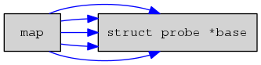
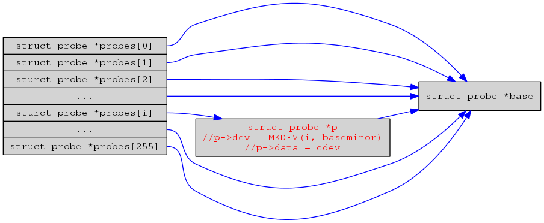
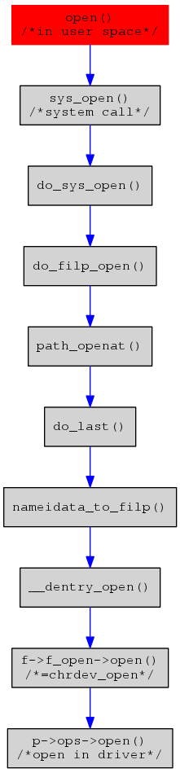

Linux Character Device Architecture
Table of Contents
1 Introduction
The data of character device just can be accessed as a stream, read/write it one by one, in other word, you can't random access the data from character device, which is the diffrence with block device.
heree, we will show how to write a character device driver, and to study linux character device driver in deeper level — to analize the relationship between file system and character device driver. we'll to show how to access character device in user space in next section.
1.1 Accress from user space
In Linux, everything is a file, that means device can be accessed as a special type of file. you can call open() to get the file handle, and call read() to get data frome the device. in linux system, device node always be created in /dev directory, but it not means you must create it in the directory, you can create it in any directory, e.g., /tmp.
A device can access as the way mentioned above, and it has some differance with a nomal file, for a character device, we can use ioctl() to send cmd to device driver, and use mmap() to map memory from kernel space to user space, then the memory can access in user sapce directly.
1.2 How to write a character device driver
To write a character device driver, need to define a variable in the type of struct file_operations, and initialize it with functions defied in driver, in the callback of __init, you can call register_chrdev() with MAJOR and file_operations variable parameter to register a character device. after the step, you can mknode with MAJOR and access it with open/read/write fuctions in userspace. It look likes very simple to complete a character device driver, Yes, it is so simple!
2 Character Device File System Init
There is a chrdev_init() function in the file char_dev.c, character device file system is initialized here, the first thing in this function to do is initializing the kobj_map with kobj_map_init() function, the struct kboj_map is defined as following:
struct kobj_map {
struct probe {
struct probe *next;
dev_t dev;
unsigned long range;
struct module *owner;
kobj_probe_t *get;
int (*lock)(dev_t, void *);
void *data;
} *probes[255];
struct mutex *lock;
};
The number of array probes is defined as MAX major number for character device, so the max major number for character device is 255.
2.1 kobj_map init
the result of calling kobj_map_init() is as the following graph showd.

2.2 The analices of register_chrdev()
- to call __register_chrdev_region() to alloc a major not used and make chardevs[major] point to a new aclloced variable in type of struct char_device_struct.
static struct char_device_struct {
struct char_device_struct *next;
unsigned int major;
unsigned int baseminor;
int minorct;
char name[64];
struct cdev *cdev; /* will die */
} *chrdevs[CHRDEV_MAJOR_HASH_SIZE];
- to call cdev_alloc to alloc a struct cdev variable and fill the fileds with fops and name passed in
- then call cdev_add() to add the char device.
in cdev_add() function, called kobj_map() to add a probe to cdev_map, which the probe with the field be filled with MKDEV(major, 0), the major is the major number of the character device. what happend as showed in following graph.

3 Opening A Device File
3.1 The interface with file system
def_chr_fops is defined in char_dev.c as following:
const struct file_operations def_chr_fops = {
.open = chrdev_open,
.llseek = noop_llseek,
};
and the def_chr_fops assigned to inode->i_fops in init_special_inode()
void init_special_inode(struct inode *inode, umode_t mode, dev_t rdev)
{
inode->i_mode = mode;
if (S_ISCHR(mode)) {
inode->i_fop = &def_chr_fops;
inode->i_rdev = rdev;
} else if (S_ISBLK(mode)) {
inode->i_fop = &def_blk_fops;
inode->i_rdev = rdev;
} else if (S_ISFIFO(mode))
inode->i_fop = &def_fifo_fops;
else if (S_ISSOCK(mode))
inode->i_fop = &bad_sock_fops;
else
printk(KERN_DEBUG "init_special_inode: bogus i_mode (%o) for"
" inode %s:%lu\n", mode, inode->i_sb->s_id,
inode->i_ino);
}
3.2 What have been done in chrdev_open()
The detail please see the comment in following code.
static int chrdev_open(struct inode *inode, struct file *filp)
{
struct cdev *p;
struct cdev *new = NULL;
int ret = 0;
spin_lock(&cdev_lock);
p = inode->i_cdev;
if (!p) {
struct kobject *kobj;
int idx;
spin_unlock(&cdev_lock);
kobj = kobj_lookup(cdev_map, inode->i_rdev, &idx); // to lookup kobj in cdev_map with major and minor number
if (!kobj)
return -ENXIO;
new = container_of(kobj, struct cdev, kobj);
spin_lock(&cdev_lock);
/* Check i_cdev again in case somebody beat us to it while
we dropped the lock. */
p = inode->i_cdev;
if (!p) {
inode->i_cdev = p = new;
list_add(&inode->i_devices, &p->list);
new = NULL;
} else if (!cdev_get(p))
ret = -ENXIO;
} else if (!cdev_get(p))
ret = -ENXIO;
spin_unlock(&cdev_lock);
cdev_put(new);
if (ret)
return ret;
ret = -ENXIO;
/* get file_operations defined in driver and assigned to filp->f_op,
when user call read/write in user space, it will call read/write define in driver directly.*/
filp->f_op = fops_get(p->ops);
if (!filp->f_op)
goto out_cdev_put;
if (filp->f_op->open) {
ret = filp->f_op->open(inode, filp); // call open defined in driver
if (ret)
goto out_cdev_put;
}
return 0;
out_cdev_put:
cdev_put(p);
return ret;
}
3.3 The call graph of open()
